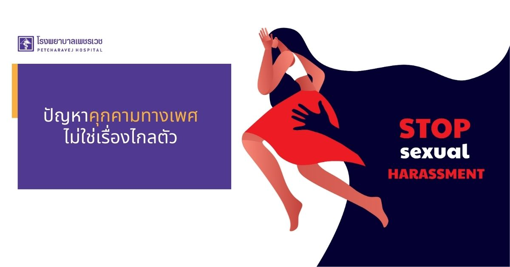
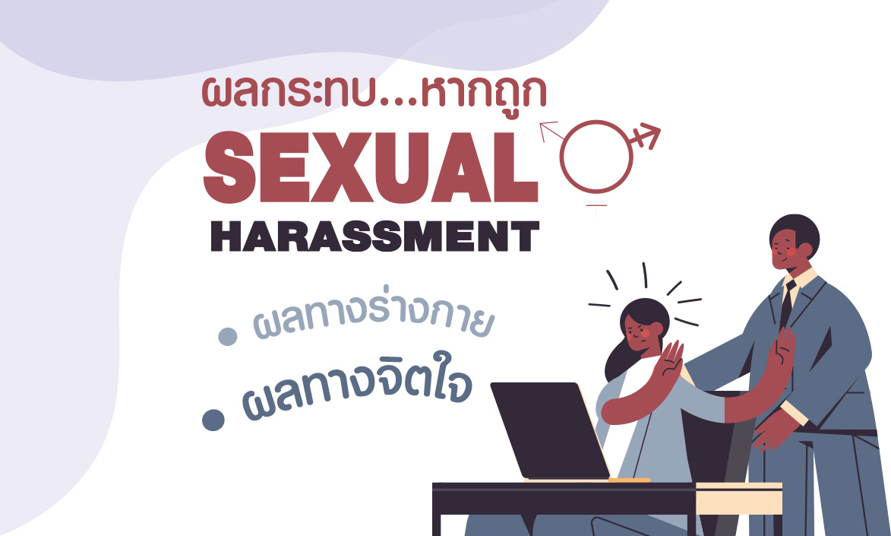
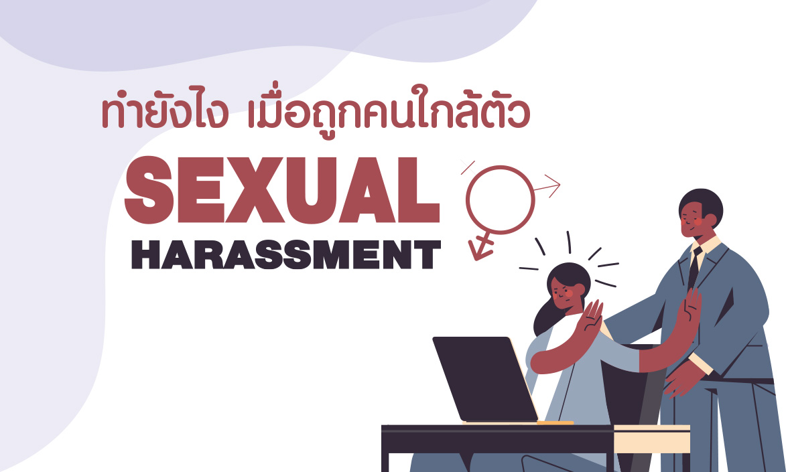
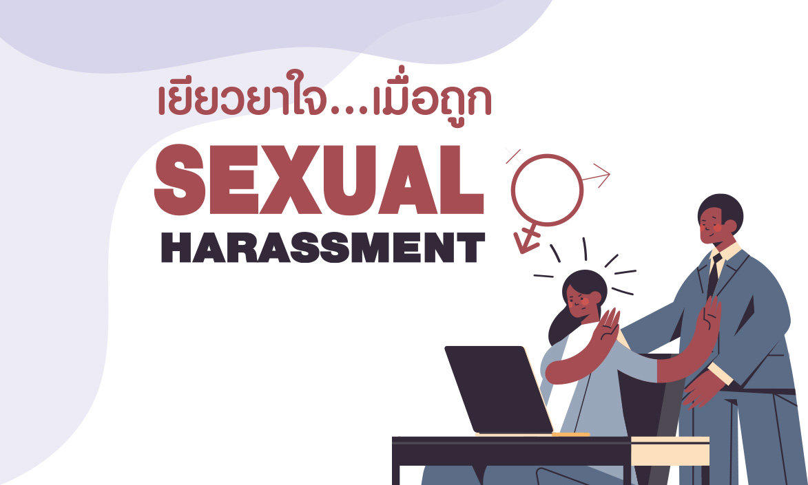

การล่วงละเมิดทางเพศ

Sexual Harassment หมายถึง พฤติกรรมที่ฝ่ายหนึ่งแสดงออกถึงนัยยะทางเพศ ทำให้เหยื่อรู้สึกไม่ดี ถูกคุกคาม ไม่ปลอดภัย หรือถูกลดทอนศักดิ์ศรีคุณค่าความเป็นมนุษย์ Sexual Harassment มีหลายประเภท คนส่วนใหญ่มักคิดว่าจะแสดงออกทางร่างกายเท่านั้น แต่จริงๆ แล้วมีอีกหลายรูปแบบซึ่งสร้างบาดแผลทางใจให้กับเหยื่อได้เช่นกัน
|

ผลกระทบที่ตามมาจากการถูก Sexual Harassment ผลกระทบมีทั้งด้านร่างกายและจิตใจ ซึ่งส่งผลเสียต่อเหยื่อ ทั้งในระยะสั้นและยาว เพราะการถูก Sexual Harassment นับเป็นเหตุการณ์ที่กระทบกระเทือนใจที่ทำให้เหยื่อรู้สึกหวาดกลัว คุกคาม และไม่ปลอดภัย
• ผลทางจิตใจ (Emotional / Mental Health Effects) กังวล เศร้าซึม โกรธ รู้สึกผิด โทษตัวเอง หมดความมั่นใจในตัวเอง หวาดหวั่นกับอนาคตที่จะมาถึง รู้สึกอ่อนแอ ไม่สามารถปกป้องตัวเองได้ อาจนำไปสู่การเจ็บป่วยโรคทางจิตเวช เช่น โรคซึมเศร้า โรควิตกกังวล PTSD |

เมื่อถูกคนใกล้ตัว Sexual Harassment ควรทำอย่างไร Sexual Harassment สามารถเกิดได้กับทุกคน ไม่ว่าจะเป็นใดหรือในสถานการณ์ไหน สิ่งที่ยากในการจัดการกับ Sexual Harassment เนื่องจากบางครั้งผู้กระทำเป็นผู้อาวุโส มีอำนาจ สามารถให้คุณให้โทษกับเหยื่อ เป็นคนที่ทุกคนเชื่อว่าเป็นคนดี บางครั้งผู้กระทำมีการข่มขู่เหยื่อร่วมด้วย ทำให้เหยื่อไม่สามารถบอกใครและช่วยเหลือตัวเองไม่ได้
2. บอกปฏิเสธกับผู้กระทำ ตั้งสติ ตระหนักรู้ว่าตนเองกำลังถูก Sexual Harassment หากเป็นไปได้ให้พาตัวเองออกมาจากสถานการณ์นั้นก่อน หรือกล้าที่จะปฏิเสธ บอกผู้กระทำว่าสิ่งที่ผู้กระทำทำอยู่เป็นสิ่งที่ผิด 3. เล่าให้คนที่ไว้ใจฟัง เล่าเรื่องและระบายความรู้สึกที่เกิดขึ้นให้คนที่เราไว้ใจฟัง ขอคำปรึกษาและความช่วยเหลือ 4. แจ้งผู้ที่มีหน้าที่รับผิดชอบให้ดำเนินการเรื่องนี้คิดวางแผนให้รอบคอบว่าจะแจ้งใครบ้างและในรูปแบบไหน บางครั้งโลกไม่ได้ยุติธรรมกับเราเสมอไป เช่น การร้องเรียนอาจทำให้ถูกกลั่นแกล้งมากกว่าเดิม อาจต้องแจ้งกับหลายหน่วยงานและหลายคนเพื่อให้มีพยาน 5. บันทึกหลักฐานรูปแบบต่างๆ เช่น การอัดเสียง อัดคลิป ภาพถ่าย การเขียนบันทึกไดอะรี่ การแค้ปข้อความเก็บไว้ เพื่อไว้ใช้ในการดำเนินการสอบสวนหรือทางกฎหมาย |

วิธีเยียวยาใจ เมื่อถูก Sexual Harassment1. ปรับวิธีการคิดว่าเราไม่ใช่ฝ่ายผิด เหยื่อบางคนโทษตัวเอง ควรตั้งสติให้ดี ทำความเข้าใจว่า เหยื่อไม่ได้เป็นฝ่ายผิด และไม่ใช่เรื่องที่น่าอับอายในการที่จะบอกผู้กระทำหรือคนอื่นถึงเรื่องที่เกิดขึ้น 2. มองหาข้อดีเพื่อเพิ่มความมั่นใจในตัวเอง เหยื่อที่ถูก Sexual Harassment มักสูญเสียความมั่นใจในตัวเอง (Low Self-Esteem) เช่น ถูกผู้กระทำต่อว่า คนรอบตัวโทษว่าเป็นความผิดของเหยื่อ ดังนั้นเราต้องพยายามหาข้อดีที่ตัวเองมีอยู่ ชื่นชมตัวเอง เรียกความมั่นใจในตัวเองให้กลับคืนมา เช่น การทำบางอย่างให้สำเร็จตามที่ตั้งเป้าไว้ เพื่อให้เรารู้สึกว่ายังควบคุมชีวิตตัวเองได้อยู่ (Sense of Mastery) ลองถามคนรอบข้างที่เราสนิทดูว่าตัวเรามีข้อดีอะไรบ้าง 3. หากมีความคิดอารมณ์พฤติกรรมเปลี่ยนแปลงไปจากเดิมให้พบผู้เชี่ยวชาญ เหยื่อที่ถูก Sexual Harassment จะมีปัญหาทางกายและจิตใจ บางคนหายเร็ว แต่บางคนเรื่องที่เกิดขึ้นกลายเป็นบาดแผลทางใจ ทำให้มีอาการผิดปกติ เช่น คิดวนเวียนเรื่องร้ายซ้ำๆ นอนไม่หลับ สมาธิความจำแย่ ดังนั้นการพบกับผู้เชี่ยวชาญ เช่น จิตแพทย์ นักจิตวิทยา เพื่อให้ได้รับการวินิจฉัยและการช่วยเหลือรักษาจึงเป็นสิ่งที่สำคัญ |
>> Cr.เว็บไซต์ <<